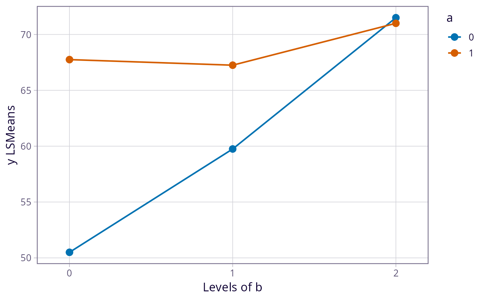

Example 8.1 from Generalized Linear Mixed Models: Modern Concepts, Methods and Applications by Stroup, Ptukhina, and Garai (2024, 2nd ed.)
Source:R/Exam8.1.R
Exam8.1.RdExam8.1 explains multifactor models with all factors qualitative
References
Stroup, W. W., Ptukhina, M., and Garai, S. (2024). Generalized Linear Mixed Models: Modern Concepts, Methods and Applications (2nd ed.). CRC Press.
@seealso
DataSet8.1
Author
Muhammad Yaseen (myaseen208@gmail.com)
Adeela Munawar (adeela.uaf@gmail.com)
Examples
data(DataSet8.1)
DataSet8.1$a <- factor(x = DataSet8.1$a)
DataSet8.1$b <- factor(x = DataSet8.1$b)
Exam8.1.lm1 <- stats::lm(formula = y ~ a + b + a*b, data = DataSet8.1)
summary(Exam8.1.lm1)
#>
#> Call:
#> stats::lm(formula = y ~ a + b + a * b, data = DataSet8.1)
#>
#> Residuals:
#> Min 1Q Median 3Q Max
#> -10.50 -2.50 0.00 3.25 7.75
#>
#> Coefficients:
#> Estimate Std. Error t value Pr(>|t|)
#> (Intercept) 50.500 2.561 19.718 1.23e-13 ***
#> a1 17.250 3.622 4.763 0.000156 ***
#> b1 9.250 3.622 2.554 0.019936 *
#> b2 21.000 3.622 5.798 1.71e-05 ***
#> a1:b1 -9.750 5.122 -1.904 0.073089 .
#> a1:b2 -17.750 5.122 -3.465 0.002761 **
#> ---
#> Signif. codes: 0 ‘***’ 0.001 ‘**’ 0.01 ‘*’ 0.05 ‘.’ 0.1 ‘ ’ 1
#>
#> Residual standard error: 5.122 on 18 degrees of freedom
#> Multiple R-squared: 0.7352, Adjusted R-squared: 0.6617
#> F-statistic: 9.997 on 5 and 18 DF, p-value: 0.0001049
#>
parameters::model_parameters(Exam8.1.lm1)
#> Parameter | Coefficient | SE | 95% CI | t(18) | p
#> ---------------------------------------------------------------------
#> (Intercept) | 50.50 | 2.56 | [ 45.12, 55.88] | 19.72 | < .001
#> a [1] | 17.25 | 3.62 | [ 9.64, 24.86] | 4.76 | < .001
#> b [1] | 9.25 | 3.62 | [ 1.64, 16.86] | 2.55 | 0.020
#> b [2] | 21.00 | 3.62 | [ 13.39, 28.61] | 5.80 | < .001
#> a [1] × b [1] | -9.75 | 5.12 | [-20.51, 1.01] | -1.90 | 0.073
#> a [1] × b [2] | -17.75 | 5.12 | [-28.51, -6.99] | -3.47 | 0.003
#>
#> Uncertainty intervals (equal-tailed) and p-values (two-tailed) computed
#> using a Wald t-distribution approximation.
stats::anova(Exam8.1.lm1)
#> Analysis of Variance Table
#>
#> Response: y
#> Df Sum Sq Mean Sq F value Pr(>F)
#> a 1 392.04 392.04 14.9428 0.0011330 **
#> b 2 603.25 301.62 11.4966 0.0006068 ***
#> a:b 2 316.08 158.04 6.0238 0.0099348 **
#> Residuals 18 472.25 26.24
#> ---
#> Signif. codes: 0 ‘***’ 0.001 ‘**’ 0.01 ‘*’ 0.05 ‘.’ 0.1 ‘ ’ 1
##---Simple effects of b within each level of a (SAS SLICE equivalent)
emmeans::joint_tests(Exam8.1.lm1, by = "a")
#> a = 0:
#> model term df1 df2 F.ratio p.value
#> b 2 18 16.888 <0.0001
#>
#> a = 1:
#> model term df1 df2 F.ratio p.value
#> b 2 18 0.632 0.5429
#>
##---Interaction plot
emmeans::emmip(
object = Exam8.1.lm1,
formula = a ~ b,
ylab = "y LSMeans",
main = "LSMeans for a*b"
)

#-------------------------------------------------------------
## Individual least squares treatment means
#-------------------------------------------------------------
emmeans::emmeans(object = Exam8.1.lm1, specs = ~a*b)
#> a b emmean SE df lower.CL upper.CL
#> 0 0 50.5 2.56 18 45.1 55.9
#> 1 0 67.8 2.56 18 62.4 73.1
#> 0 1 59.8 2.56 18 54.4 65.1
#> 1 1 67.2 2.56 18 61.9 72.6
#> 0 2 71.5 2.56 18 66.1 76.9
#> 1 2 71.0 2.56 18 65.6 76.4
#>
#> Confidence level used: 0.95
##---Simple effects comparison of interaction by a
emmeans::emmeans(object = Exam8.1.lm1, specs = pairwise ~ b|a)$contrasts
#> a = 0:
#> contrast estimate SE df t.ratio p.value
#> b0 - b1 -9.25 3.62 18 -2.554 0.0498
#> b0 - b2 -21.00 3.62 18 -5.798 <0.0001
#> b1 - b2 -11.75 3.62 18 -3.244 0.0119
#>
#> a = 1:
#> contrast estimate SE df t.ratio p.value
#> b0 - b1 0.50 3.62 18 0.138 0.9896
#> b0 - b2 -3.25 3.62 18 -0.897 0.6488
#> b1 - b2 -3.75 3.62 18 -1.035 0.5649
#>
#> P value adjustment: tukey method for comparing a family of 3 estimates
emm_b_by_a <- emmeans::emmeans(object = Exam8.1.lm1, specs = ~b|a)
pairs(emm_b_by_a, simple = "each", combine = TRUE)
#> a b contrast estimate SE df t.ratio p.value
#> 0 . b0 - b1 -9.25 3.62 18 -2.554 0.1794
#> 0 . b0 - b2 -21.00 3.62 18 -5.798 0.0002
#> 0 . b1 - b2 -11.75 3.62 18 -3.244 0.0405
#> 1 . b0 - b1 0.50 3.62 18 0.138 1.0000
#> 1 . b0 - b2 -3.25 3.62 18 -0.897 1.0000
#> 1 . b1 - b2 -3.75 3.62 18 -1.035 1.0000
#> . 0 a0 - a1 -17.25 3.62 18 -4.763 0.0014
#> . 1 a0 - a1 -7.50 3.62 18 -2.071 0.4773
#> . 2 a0 - a1 0.50 3.62 18 0.138 1.0000
#>
#> P value adjustment: bonferroni method for 9 tests
pairs(emm_b_by_a, simple = "a")
#> b = 0:
#> contrast estimate SE df t.ratio p.value
#> a0 - a1 -17.2 3.62 18 -4.763 0.0002
#>
#> b = 1:
#> contrast estimate SE df t.ratio p.value
#> a0 - a1 -7.5 3.62 18 -2.071 0.0530
#>
#> b = 2:
#> contrast estimate SE df t.ratio p.value
#> a0 - a1 0.5 3.62 18 0.138 0.8917
#>
pairs(emm_b_by_a, simple = "b")
#> a = 0:
#> contrast estimate SE df t.ratio p.value
#> b0 - b1 -9.25 3.62 18 -2.554 0.0498
#> b0 - b2 -21.00 3.62 18 -5.798 <0.0001
#> b1 - b2 -11.75 3.62 18 -3.244 0.0119
#>
#> a = 1:
#> contrast estimate SE df t.ratio p.value
#> b0 - b1 0.50 3.62 18 0.138 0.9896
#> b0 - b2 -3.25 3.62 18 -0.897 0.6488
#> b1 - b2 -3.75 3.62 18 -1.035 0.5649
#>
#> P value adjustment: tukey method for comparing a family of 3 estimates
pairs(emm_b_by_a)
#> a = 0:
#> contrast estimate SE df t.ratio p.value
#> b0 - b1 -9.25 3.62 18 -2.554 0.0498
#> b0 - b2 -21.00 3.62 18 -5.798 <0.0001
#> b1 - b2 -11.75 3.62 18 -3.244 0.0119
#>
#> a = 1:
#> contrast estimate SE df t.ratio p.value
#> b0 - b1 0.50 3.62 18 0.138 0.9896
#> b0 - b2 -3.25 3.62 18 -0.897 0.6488
#> b1 - b2 -3.75 3.62 18 -1.035 0.5649
#>
#> P value adjustment: tukey method for comparing a family of 3 estimates
emmeans::contrast(emmeans::emmeans(object = Exam8.1.lm1, specs = ~b|a))
#> a = 0:
#> contrast estimate SE df t.ratio p.value
#> b0 effect -10.083 2.09 18 -4.822 0.0002
#> b1 effect -0.833 2.09 18 -0.399 0.6949
#> b2 effect 10.917 2.09 18 5.221 0.0002
#>
#> a = 1:
#> contrast estimate SE df t.ratio p.value
#> b0 effect -0.917 2.09 18 -0.438 0.6663
#> b1 effect -1.417 2.09 18 -0.677 0.6663
#> b2 effect 2.333 2.09 18 1.116 0.6663
#>
#> P value adjustment: fdr method for 3 tests
emmeans::emmeans(object = Exam8.1.lm1, specs = pairwise ~ b|a)
#> $emmeans
#> a = 0:
#> b emmean SE df lower.CL upper.CL
#> 0 50.5 2.56 18 45.1 55.9
#> 1 59.8 2.56 18 54.4 65.1
#> 2 71.5 2.56 18 66.1 76.9
#>
#> a = 1:
#> b emmean SE df lower.CL upper.CL
#> 0 67.8 2.56 18 62.4 73.1
#> 1 67.2 2.56 18 61.9 72.6
#> 2 71.0 2.56 18 65.6 76.4
#>
#> Confidence level used: 0.95
#>
#> $contrasts
#> a = 0:
#> contrast estimate SE df t.ratio p.value
#> b0 - b1 -9.25 3.62 18 -2.554 0.0498
#> b0 - b2 -21.00 3.62 18 -5.798 <0.0001
#> b1 - b2 -11.75 3.62 18 -3.244 0.0119
#>
#> a = 1:
#> contrast estimate SE df t.ratio p.value
#> b0 - b1 0.50 3.62 18 0.138 0.9896
#> b0 - b2 -3.25 3.62 18 -0.897 0.6488
#> b1 - b2 -3.75 3.62 18 -1.035 0.5649
#>
#> P value adjustment: tukey method for comparing a family of 3 estimates
#>
emmeans::emmeans(object = Exam8.1.lm1, specs = pairwise ~ b|a)$contrasts
#> a = 0:
#> contrast estimate SE df t.ratio p.value
#> b0 - b1 -9.25 3.62 18 -2.554 0.0498
#> b0 - b2 -21.00 3.62 18 -5.798 <0.0001
#> b1 - b2 -11.75 3.62 18 -3.244 0.0119
#>
#> a = 1:
#> contrast estimate SE df t.ratio p.value
#> b0 - b1 0.50 3.62 18 0.138 0.9896
#> b0 - b2 -3.25 3.62 18 -0.897 0.6488
#> b1 - b2 -3.75 3.62 18 -1.035 0.5649
#>
#> P value adjustment: tukey method for comparing a family of 3 estimates
##---Alternative method of pairwise comparisons by applying contrast coefficients
emmeans::contrast(
emmeans::emmeans(object = Exam8.1.lm1, specs = ~a*b),
list(
c1 = c(1, 0, -1, 0, 0, 0),
c2 = c(1, 0, 0, 0, -1, 0),
c3 = c(0, 0, 1, 0, -1, 0),
c4 = c(0, 1, 0, -1, 0, 0),
c5 = c(0, 1, 0, 0, 0, -1),
c6 = c(0, 1, 0, 0, -1, 0)
)
)
#> contrast estimate SE df t.ratio p.value
#> c1 -9.25 3.62 18 -2.554 0.0199
#> c2 -21.00 3.62 18 -5.798 <0.0001
#> c3 -11.75 3.62 18 -3.244 0.0045
#> c4 0.50 3.62 18 0.138 0.8917
#> c5 -3.25 3.62 18 -0.897 0.3814
#> c6 -3.75 3.62 18 -1.035 0.3142
#>
##---Nested Model
Exam8.1.lm2 <- stats::lm(formula = y ~ a + a %in% b, data = DataSet8.1)
summary(Exam8.1.lm2)
#>
#> Call:
#> stats::lm(formula = y ~ a + a %in% b, data = DataSet8.1)
#>
#> Residuals:
#> Min 1Q Median 3Q Max
#> -10.50 -2.50 0.00 3.25 7.75
#>
#> Coefficients:
#> Estimate Std. Error t value Pr(>|t|)
#> (Intercept) 50.500 2.561 19.718 1.23e-13 ***
#> a1 17.250 3.622 4.763 0.000156 ***
#> a0:b1 9.250 3.622 2.554 0.019936 *
#> a1:b1 -0.500 3.622 -0.138 0.891734
#> a0:b2 21.000 3.622 5.798 1.71e-05 ***
#> a1:b2 3.250 3.622 0.897 0.381392
#> ---
#> Signif. codes: 0 ‘***’ 0.001 ‘**’ 0.01 ‘*’ 0.05 ‘.’ 0.1 ‘ ’ 1
#>
#> Residual standard error: 5.122 on 18 degrees of freedom
#> Multiple R-squared: 0.7352, Adjusted R-squared: 0.6617
#> F-statistic: 9.997 on 5 and 18 DF, p-value: 0.0001049
#>
parameters::model_parameters(Exam8.1.lm2)
#> Parameter | Coefficient | SE | 95% CI | t(18) | p
#> ------------------------------------------------------------------
#> (Intercept) | 50.50 | 2.56 | [45.12, 55.88] | 19.72 | < .001
#> a [1] | 17.25 | 3.62 | [ 9.64, 24.86] | 4.76 | < .001
#> a [0] × b1 | 9.25 | 3.62 | [ 1.64, 16.86] | 2.55 | 0.020
#> a [1] × b1 | -0.50 | 3.62 | [-8.11, 7.11] | -0.14 | 0.892
#> a [0] × b2 | 21.00 | 3.62 | [13.39, 28.61] | 5.80 | < .001
#> a [1] × b2 | 3.25 | 3.62 | [-4.36, 10.86] | 0.90 | 0.381
#>
#> Uncertainty intervals (equal-tailed) and p-values (two-tailed) computed
#> using a Wald t-distribution approximation.
stats::anova(Exam8.1.lm2)
#> Analysis of Variance Table
#>
#> Response: y
#> Df Sum Sq Mean Sq F value Pr(>F)
#> a 1 392.04 392.04 14.9428 0.0011330 **
#> a:b 4 919.33 229.83 8.7602 0.0004147 ***
#> Residuals 18 472.25 26.24
#> ---
#> Signif. codes: 0 ‘***’ 0.001 ‘**’ 0.01 ‘*’ 0.05 ‘.’ 0.1 ‘ ’ 1
car::linearHypothesis(Exam8.1.lm2, c("a0:b1 = a0:b2"))
#>
#> Linear hypothesis test:
#> a0:b1 - a0:b2 = 0
#>
#> Model 1: restricted model
#> Model 2: y ~ a + a %in% b
#>
#> Res.Df RSS Df Sum of Sq F Pr(>F)
#> 1 19 748.38
#> 2 18 472.25 1 276.12 10.525 0.004503 **
#> ---
#> Signif. codes: 0 ‘***’ 0.001 ‘**’ 0.01 ‘*’ 0.05 ‘.’ 0.1 ‘ ’ 1
car::linearHypothesis(Exam8.1.lm2, c("a1:b1 = a1:b2"))
#>
#> Linear hypothesis test:
#> a1:b1 - a1:b2 = 0
#>
#> Model 1: restricted model
#> Model 2: y ~ a + a %in% b
#>
#> Res.Df RSS Df Sum of Sq F Pr(>F)
#> 1 19 500.38
#> 2 18 472.25 1 28.125 1.072 0.3142
##---Bonferroni's adjusted p-values
emmeans::emmeans(
object = Exam8.1.lm2,
specs = pairwise ~ b|a,
adjust = "bonferroni"
)$contrasts
#> NOTE: A nesting structure was detected in the fitted model:
#> b %in% a
#> a = 0:
#> contrast estimate SE df t.ratio p.value
#> b0 - b1 -9.25 3.62 18 -2.554 0.0598
#> b0 - b2 -21.00 3.62 18 -5.798 <0.0001
#> b1 - b2 -11.75 3.62 18 -3.244 0.0135
#>
#> a = 1:
#> contrast estimate SE df t.ratio p.value
#> b0 - b1 0.50 3.62 18 0.138 1.0000
#> b0 - b2 -3.25 3.62 18 -0.897 1.0000
#> b1 - b2 -3.75 3.62 18 -1.035 0.9426
#>
#> P value adjustment: bonferroni method for 3 tests
##--- Alternative method of pairwise comparisons with Bonferroni adjustment
emmeans::contrast(
emmeans::emmeans(object = Exam8.1.lm1, specs = ~a*b),
list(
c1 = c(1, 0, -1, 0, 0, 0),
c2 = c(1, 0, 0, 0, -1, 0),
c3 = c(0, 0, 1, 0, -1, 0),
c4 = c(0, 1, 0, -1, 0, 0),
c5 = c(0, 1, 0, 0, 0, -1),
c6 = c(0, 1, 0, 0, -1, 0)
),
adjust = "bonferroni"
)
#> contrast estimate SE df t.ratio p.value
#> c1 -9.25 3.62 18 -2.554 0.1196
#> c2 -21.00 3.62 18 -5.798 0.0001
#> c3 -11.75 3.62 18 -3.244 0.0270
#> c4 0.50 3.62 18 0.138 1.0000
#> c5 -3.25 3.62 18 -0.897 1.0000
#> c6 -3.75 3.62 18 -1.035 1.0000
#>
#> P value adjustment: bonferroni method for 6 tests